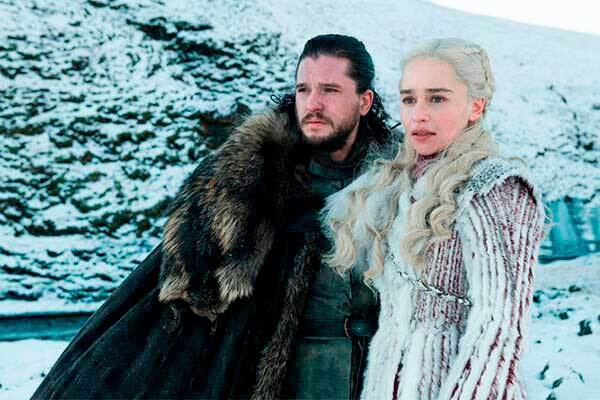
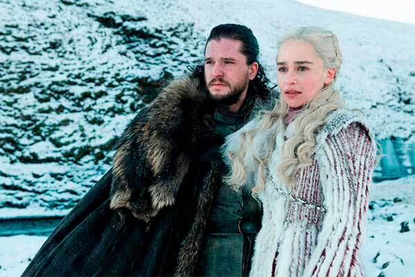

Game Of Thrones
La primera temporada comienza quince años después de la guerra civil conocida como la «rebelión de Robert, con la cual Robert Baratheon expulsó del Trono de Hierro a los Targaryen y se proclamó gobernante de Poniente. Tiempo después, y tras la repentina muerte de la Mano del Rey, Jon Arryn, Robert invita a su amigo Eddard Ned Stark Lord de Invernalia a asumir el oficio vacante. Este último acepta y, tan pronto llega a Desembarco del Rey la capital de Poniente y sede del Trono de Hierro, va descubriendo la verdad detrás de una serie de intrigas y conspiraciones que involucran a otras familias nobiliarias y que están relacionadas con la tragedia de Arryn. Sin embargo, cuando Robert muere también repentinamente, los Lannister reclaman el poder y ejecutan a Stark para evitar la difusión de sus investigaciones. Estos acontecimientos desatan una guerra entre los reinos de Poniente que se extiende hasta el final de la serie, y a la cual eventualmente se suma Daenerys, la única superviviente de la casa Targaryen, que en el exilio reúne un vasto ejército y cría a tres dragones para reclamar el poder despojado a su familia tiempo atrás. Simultáneamente, más allá de los territorios de Poniente limitados por un muro de hielo que es vigilado por la Guardia de la Noche, otra amenaza se cierne sobre los siete reinos ante la llegada de criaturas sobrenaturales conocidas como caminantes blancos y guiadas por el denominado Rey de la Noche.
Jon Snow, nacido Aegon Targaryen, es hijo de Lyanna Stark y Rhaegar Targaryen, el difunto Príncipe de Rocadragón. Desde la infancia, Jon es presentado como el hijo bastardo de Lord Eddard Stark, el hermano de Lyanna, y criado junto a los hijos legítimos de Eddard en Winterfell. La verdadera paternidad de Jon se mantiene en secreto para todos, incluido el propio Jon, para protegerlo de aquellos que buscaron la aniquilación completa de la Casa Targaryen.
La reina Daenerys I Targaryen,también conocida como Daenerys Stormborn, y cariñosamente conocida como Dany, era la única hija del rey Aerys II Targaryen y la reina Rhaella, y la hermana menor de Rhaegar y Viserys Targaryen. Daenerys fue inicialmente una joven tímida y obediente. Después de su matrimonio con Drogo, obtuvo la confianza de su khalasar. Después de su muerte, expandió su dominio a Essos, ganando la lealtad de un ejército de Unsullied y liberando Slaver's Bay de los amos de esclavos Ghiscari.
 

Breaking Bad
Walter White es un frustrado profesor de química en un instituto, padre de un joven discapacitado y con su esposa Skyler embarazada. Además, trabaja en un lavadero de vehículos por las tardes. Cuando le diagnostican un cáncer pulmonar terminal se plantea qué pasará con su familia cuando él muera. En una redada de la DEA, a la cual fue invitado por su cuñado, el agente Hank Schrader, Walt reconoce a un antiguo alumno suyo, Jesse Pinkman, a quien contacta para fabricar y vender metanfetamina y así asegurar el bienestar económico de su familia. Pero el acercamiento al mundo de las drogas y el trato con traficantes y mafiosos contamina la personalidad de Walter, el cual va abandonando poco a poco su personalidad recta y predecible para convertirse en alguien sin demasiados escrúpulos cuando se trata de conseguir lo que quiere.
Walter "Walt" Hartwell White, también conocido por su seudónimo clandestino "Heisenberg", es un químico y profesor de química de Albuquerque, Nuevo México que, tras ser diagnosticado con cáncer de pulmón inoperable, decide empezar a fabricar metanfetamina para poder mantener a su familia provista de cara al futuro.
Gustavo "Gus" Fring era el líder criminal de un imperio de drogas y el dueño de la cadena de restaurantes Los Pollos Hermanos. Un magnate de negocios y filántropo nacido en Chile. Inicialmente estaba afiliado al Cártel de Juárez, que utilizaba en secreto sus restaurantes como una tapadera legítima para la distribución de metanfetamina en todo el suroeste de Estados Unidos. Al igual que Walter White, Gus era un criminal que se escondía "en plena vista," recurriendo a su posición social como filántropo para ocultar su verdadera naturaleza según construía su imperio.


Vikings
Las aventuras de Ragnar Lothbrok, el héroe más grande de su época. La serie narra las sagas de la banda de hermanos vikingos de Ragnar y su familia, cuando él se levanta para convertirse en el rey de las tribus vikingas. Además de ser un guerrero valiente, Ragnar encarna las tradiciones nórdicas de la devoción a los dioses, la leyenda dice que él era un descendiente directo de Odín, el dios de la guerra y los guerreros.
El Rey Ragnar Lothbrok fue un poderoso guerrero vikingo y fundador de la Casa Lothbrok, que cree que está destinado a la grandeza. Él esta impulsado no sólo por su sed de batalla y gloria, sino también por su sed de conocimiento y la naturaleza inquisitiva.
Bjorn brazo de hierro es el Rey de Kattegat y el hijo mayor de Ragnar Lothbrok y Lagertha. Bjorn es el esposo de Gunnhild e Ingrid, probablemente padre biológico del hijo de Alfred y Elsewith, fue el tercer esposo de Torvi. Verdadero rey de toda Noruega. Bjorn es el heredero de Ragnar Lothbrok a Kattegat. Leal y emulando a su sabio padre, Bjorn se había hecho un nombre, siguiendo los pasos de su padre como un formidable guerrero, líder y explorador. Comparte la sed de aventura de su padre y desea explorar tierras lejanas. Al final de la temporada 5 con la ayuda del Rey Harald, el Rey Olaf y su medio hermano menor Hvitserk, Bjorn derrocó a su malvado medio hermano menor Ivar y se convierte en Rey de Kattegat


The Witcher
El brujo Geralt de Rivia es el protagonista y destaca por ser un antihéroe diferente, un cazador de bestias profesional pero solitario. Geralt tiene problemas para sentir que encaja en el mundo pues quienes le rodean son malvados, incluso más que las bestias que caza. Su vida cambia cuando descubre a una poderosa hechicera y a una joven princesa que guardan un peligroso secreto que no quieren que sea desvelado. La hechicera que vivió en Vengerberg, Yennefer, tuvo una dura experiencia vital desde pequeña pero que le ha hecho ser más fuerte. Pronto surge el verdadero amor entre Geralt y ella superando las adversidades que se les muestran.
Geralt de Rivia fue un legendario brujo de la Escuela del Lobo, activo durante el siglo XIII. Amaba a la hechicera Yennefer, a pesar de su tumultuosa relación, y era el padre adoptivo de Ciri. Como todos los brujos, Geralt era un cazador de monstruos a sueldo.
Yennefer, nacida en la fiesta de Belleteyn de 1173, fue una hechicera que vivió en Vengerberg, la capital de Aedirn. Era el verdadero amor de Geralt de Rivia y una figura materna para Ciri, a quien veía como una hija hasta el punto en que hizo todo lo posible para rescatar a la niña y evitar que sufriera daños.
The Last Of Us
The last of us se centra en la pandemia que está asolando a la humanidad, debido a un virus que dejó a todos al borde de la extinción. Este virus afecta a las personas de una manera extraña, ya que en cuanto se infectan se vuelven caníbales y se puede contagiar a través de un simple mordisco.
Joel, que se dedica al contrabando, se ve envuelto en una misión cuyo objetivo final de llevar a una chica llamada Ellie a las afueras de la zona de cuarentena en donde se encontrarán con las Luciénargas, un grupo paramilitar de rebeldes que rechazan la autoridad de las zonas de cuarentena, y son los encargados de recoger a Ellie.
Ellie creció como huérfana en la zona de cuarentena de Boston y asistió a una escuela preparatoria militar, donde conoció y se hizo amiga de Riley Abel. Cuando Ellie tenía catorce años, ambos se infectaron con la infección cerebral Cordyceps, donde Ellie descubrió que era inmune. Una amiga de su madre y líder de las luciérnagas, Marlene, creía que ella era la clave para la ingeniería inversa de una vacuna. Marlene le encargó a Joel Miller, un contrabandista, que escoltara a Ellie fuera del QZ. La simple entrega se convirtió en un viaje de un año a través de Estados Unidos, y los dos finalmente formaron un vínculo estrecho.